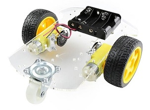
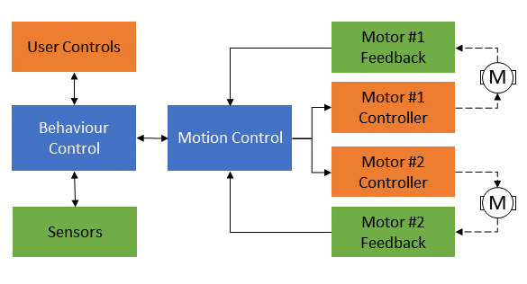

|
Smart Car Controller
1.0
Library to manage a two wheeled robotic vehicle (DC Motors)
|
|
Smart Car Controller
1.0
Library to manage a two wheeled robotic vehicle (DC Motors)
|
This library is designed to provide core mobility functions for an autonomous two wheeled Smart Car Robot. The library provides the code infrastructure that allows the car to travel in a controlled manner, on top of which specific applications can confidently be built.
This library is designed around a commonly obtainable two wheel drive (+ idler castor wheel) vehicle chassis found on online marketplaces that look something like the one below. It is also suitable, with little or no modifications, for more capable platforms with similar mechanisms.

The vehicle hardware and control system are made up of a number of subcomponents that are functionally brought together by the software library to function:
The control hierarchy implemented in the library is shown in the figure below. The library implements the control elements from "Motion Control" to the right of the figure. The components to the left of 'Motion Control' are defined into the application that defines the vehicle's behavior.

The library is designed to control 2 types of autonomous movements: